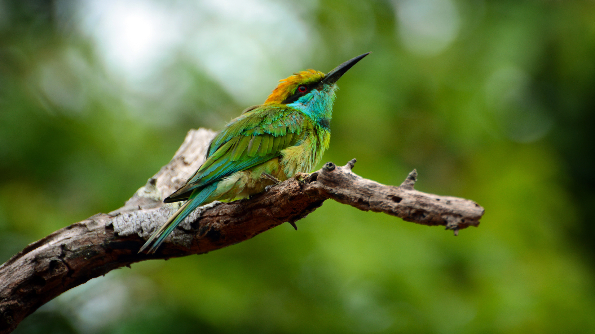
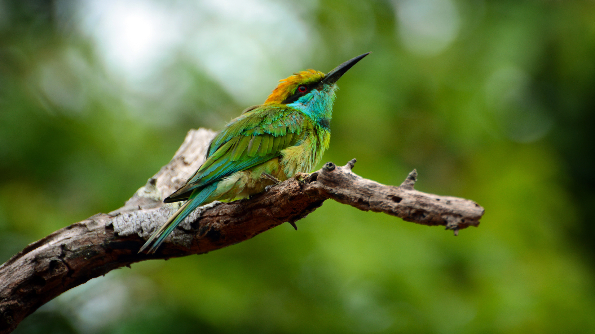

History
Yala National Park has a rich historical background that extends beyond its modern conservation efforts. The park's history intertwines with the ancient civilizations of Sri Lanka, with remnants of an ancient civilization discovered within its boundaries. Ruins of an ancient monastic settlement, believed to be from the 2nd century BC, provide a glimpse into the historical significance of the region. Throughout the centuries, Yala's expanse has been utilized for various purposes, from agriculture to hunting grounds during the colonial era. However, the park's formal establishment as a wildlife sanctuary dates back to 1938, under British colonial rule. Over the years, Yala National Park has evolved into a critical conservation area, playing a pivotal role in the protection of Sri Lanka's unique biodiversity, including its iconic leopard population. The park's history reflects its transition from historical landscapes to a modern haven for preserving the island's natural heritage.
 
